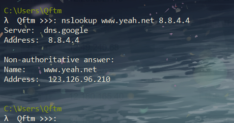
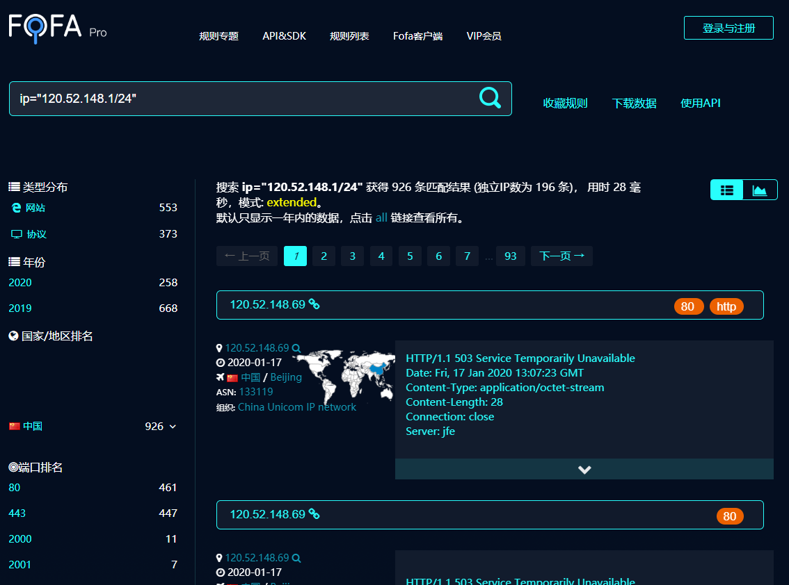
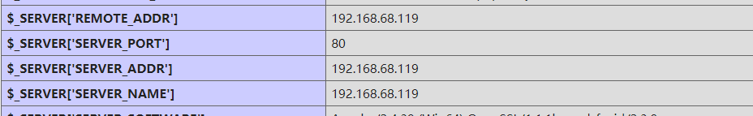

绕过CDN查找真实IP
在确认了目标确实用了CDN以后，就需要绕过CDN寻找目标的真实IP，下面介绍一些常规的方法。
内部邮箱源
一般的邮件系统都在内部，没有经过CDN的解析，通过利用目标网站的邮箱注册、找回密码或者RSS订阅等功能，查看邮件、寻找邮件头中的邮件服务器域名IP，ping这个邮件服务器的域名,就可以获得目标的真实IP。
注意：必须是目标自己的邮件服务器，第三方或公共邮件服务器是没有用的。

国外请求
很多时候国内的CDN对国外得覆盖面并不是很广，故此可以利用此特点进行探测。通过国外代理访问就能查看真实IP了，或者通过国外的DNS解析，可能就能得到真实的IP。
国际Ping
国际ping测试站点
测试站点：www.yeah.net

国外DNS解析
测试站点：www.yeah.net
美国加利福尼亚州山景市谷歌公司DNS服务器： 8.8.4.4

分站域名&C段查询
很多网站主站的访问量会比较大，所以主站都是挂CDN的，但是分站可能没有挂CDN,可以通过ping二级域名获取分站IP， 可能会出现分站和主站不是同一个IP但在同一个C段下面的情况，从而能判断出目标的真实IP段。
分站域名
具体见上面 <收集子域名信息> 部分

C段查询
- 在线查询
https://phpinfo.me/bing.php
- 工具
K8_C段旁注工具6.0、nmap、IISPutScanner、小米范WEB查找器 等
小米范WEB查找器：http://pan.baidu.com/s/1pLjaQKF

- 网络资产搜索引擎
Fofa、Shodan、ZoomEye
利用这些网络空间资产搜索引擎来搜索暴露在外的端口信息
利用语法搜索C段信息

网站漏洞
通过网站的信息泄露如phpinfo泄露，github信息泄露，命令执行等漏洞获取真实ip。
一些测试文件
phpinfo、test等

SSRF漏洞
服务器主动向外发起连接，找到真实IP地址
查询域名解析记录
一般网站从部署开始到使用cdn都有一个过程，周期如果较长的话 则可以通过这类历史解析记录查询等方式获取源站ip，查看IP与域名绑定的历史记录，可能会存在使用CDN前的记录。
在线网站查询

目标网站APP应用
如果目标网站有自己的App，可以尝试利用Fiddler或Burp Suite抓取App的请求，从里面找到目标的真实IP。
网络空间引擎搜索
shodan、FOFA、zoomeye